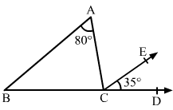

Question:1
In the given figure,
l ||
m and
t is a transversal.
If ∠5 = 70°, find the measure of each of the angles
∠1, ∠3, ∠4 and ∠8.
.png)
Solution:
Question:2
In the given figure, l || m and t is a transversal. If ∠1 and ∠2 are in the ratio 5 : 7, find the measure of each of the angles
∠1, ∠2, ∠3 and ∠8.
Solution:
Question:3
Two parallel lines l and m cut by a transversal t. If the interior angles of the same side of t be (2x − 8)° and (3x − 7)°, find the measure of each of these angles.
Solution:
Question:4
In the given figure, l || m. If s and t be transversals such that s is not parallel to t. find the values of x and y.
Solution:
From the given figure:
Question:5
In the given figure, ∠B = 65° and ∠C = 45° in ∆ABC and DAE || BC. If ∠DAB = x° and ∠EAC = y°, find the values of x and y.
Solution:
.png)
Question:6
In the adjoining figure, it is given that CE || BA, ∠BAC = 80° and ∠ECD = 35°.
Find (i) ∠ACE, (ii) ∠ACB, (iii) ∠ABC.

Solution:
Question:7
In the adjoining figure, it is being given that AO || CD, OB || CE and ∠AOB = 50°
Find the measure of ∠ECD.
Solution:
Question:8
In the adjoining figure, it is given that AB || CD, ∠AOB = 50° and ∠CDO = 40°.
Find the measure of ∠BOD.
Solution:
Question:9
In the given figure, AB || CD and a transversal EF cuts them at G and H respectively.
If GL and HM are the bisectors of the alternate angles ∠AGH and ∠GHD respectively, prove that GL || HM.
Solution:
Question:10
In the given figure, AB || CD,
∠ABE = 120°, ∠ECD = 100° and ∠BEC = x°
Find the value of x.
Solution:
.png)
Question:11
In the given figure, ABCD is a quadrilateral in which AB || DC and AD || BC.
Prove that ∠ADC = ∠ABC.
Solution:
Question:12
In the given figure, l || m and p || q.
Find the measure of each of the angles ∠a, ∠b, ∠c and ∠d.
Solution:
Question:13
In the given figure, AB || DC and AD || BC, and AC is a diagonal. If ∠BAC = 35°, ∠CAD = 40°, ∠ACB = x° and ∠ACD = y°, find the value of x and y
Solution:
Question:14
In the given figure, AB || CD and CA has been produced to E so that ∠BAE = 125°.
If ∠BAC = x°, ∠ABD = x°, ∠BDC = y° and ∠ACD = z°, find the values of x, y, z.
Solution:
Question:15
In each of the given figures, two lines l and m are cut by a transevrsal t.
Find whether l || m.
Solution: